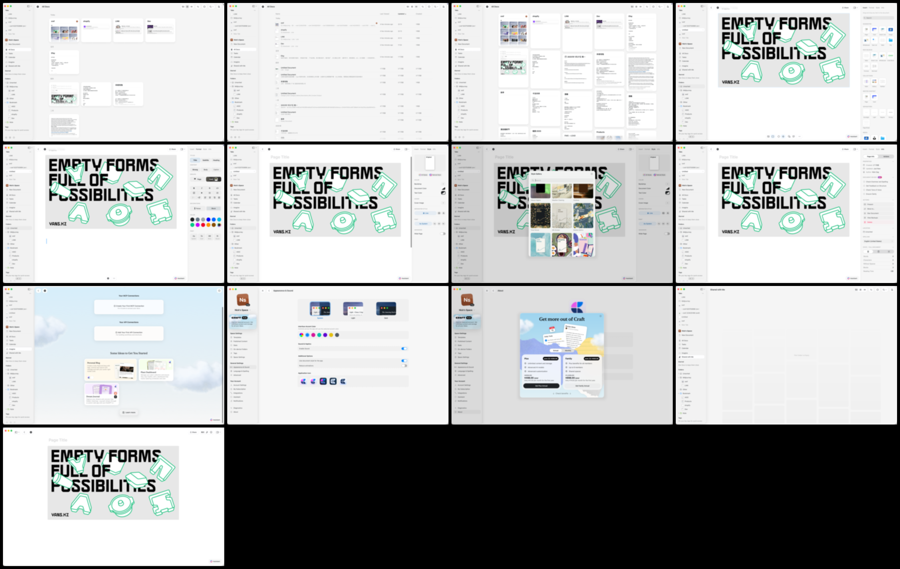

All images are committed sanitized evidence. Oracle and expected answers are excluded.

| Source | Overlay | Regions / scopes |
|---|---|---|
| library-card-view | Region overlay | navigation-shell: canonical-product-ui primary-surface: user-generated-content state-or-inspector: state-evidence redacted-private-text: excluded-sensitive-content |
| library-list-view | Region overlay | navigation-shell: canonical-product-ui primary-surface: user-generated-content state-or-inspector: state-evidence redacted-private-text: excluded-sensitive-content |
| library-masonry-view | Region overlay | navigation-shell: canonical-product-ui primary-surface: user-generated-content redacted-private-text: excluded-sensitive-content |
| editor-insert-inspector | Region overlay | navigation-shell: canonical-product-ui primary-surface: user-generated-content state-or-inspector: state-evidence redacted-private-text: excluded-sensitive-content |
| editor-format-inspector | Region overlay | navigation-shell: canonical-product-ui primary-surface: user-generated-content state-or-inspector: state-evidence redacted-private-text: excluded-sensitive-content |
| editor-style-inspector | Region overlay | navigation-shell: canonical-product-ui primary-surface: user-generated-content state-or-inspector: state-evidence redacted-private-text: excluded-sensitive-content |
| style-gallery-modal | Region overlay | navigation-shell: canonical-product-ui primary-surface: feature-specific-ui state-or-inspector: user-generated-content overlay: state-evidence redacted-private-text: excluded-sensitive-content |
| page-info-inspector | Region overlay | navigation-shell: canonical-product-ui primary-surface: user-generated-content state-or-inspector: state-evidence redacted-private-text: excluded-sensitive-content |
| imagine-onboarding | Region overlay | navigation-shell: canonical-product-ui primary-surface: marketing-surface state-or-inspector: feature-specific-ui redacted-private-text: excluded-sensitive-content |
| appearance-settings | Region overlay | navigation-shell: canonical-product-ui primary-surface: feature-specific-ui state-or-inspector: state-evidence redacted-private-text: excluded-sensitive-content |
| premium-pricing-modal | Region overlay | navigation-shell: canonical-product-ui primary-surface: marketing-surface state-or-inspector: state-evidence redacted-private-text: excluded-sensitive-content |
| shared-empty-state | Region overlay | navigation-shell: canonical-product-ui primary-surface: state-evidence redacted-private-text: excluded-sensitive-content |
| editor-focus-view | Region overlay | navigation-shell: canonical-product-ui primary-surface: user-generated-content state-or-inspector: state-evidence redacted-private-text: excluded-sensitive-content |
{kind=link}
{kind=link}
{kind=link}
{kind=link}
{kind=link}
{kind=link}
{kind=link}
{kind=link}
{kind=link}
{kind=link}
{kind=link}
{kind=link}
{kind=link}